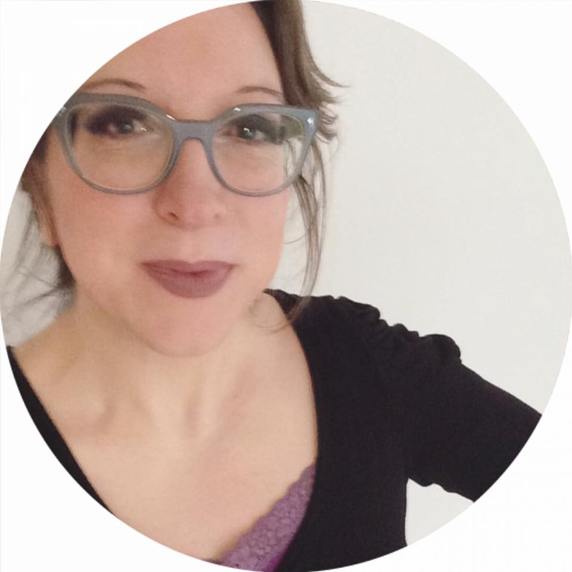

HELLO
- Ingrid Bergs
- junior webdeveloper-Becode.org
- photographer-Coaladesign
- allround creative

EDUCATION
- 1992-1995: ASO, Latijn-Wiskunde (8u.), St.-Hubertuscollege Neerpelt
- 1996-1999: kandidaturen Biologie, KULeuven
- 1999-2002: licenties Biologie-milieu , UIA Antwerpen
SKILLS
- HTML5
- CSS
- Javascript
- PHP
- Photoshop
- Illustrator
EXPERIENCE
- 2006-nowCoaladesign, Hasselt: zaakvoerder
- 2005Co-actief, Antwerpen: webdesigner, webontwikkelaar >
- 2002-2004
graphic designer - WERVEL vzw Brussel
office assistant - Pitney Bowes M. Services Mechelen
webdesigner-webdeveloper-photographer
www.coaladesign.com
www.rebelsandcuties.com
HOBBIES
- sports: Bootcamp, bodypump, kickboxing, roeien
- fashion:illustrations , fashion shoots
- design:visiting expo's and reading magazines for inspiration
- networking:active member of Jong-Voka and Sterck